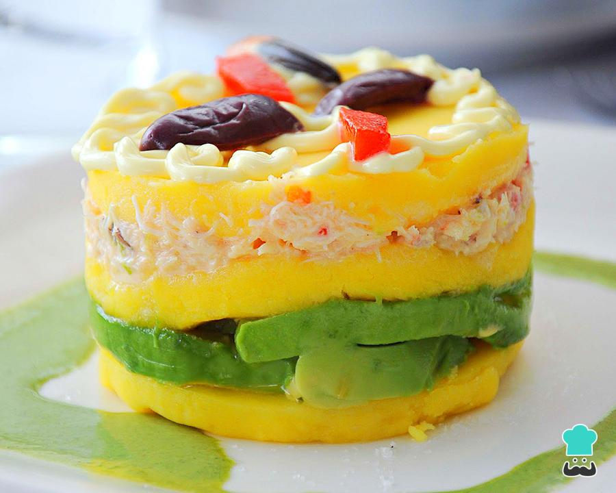

¿Cómo hacer la causa limeña?
Ingredientes:
Para la masa:
- 3 ajíes amarillos
- 1 kilogramo de papas amarillas
- 3 limones
- 60 mililitros de aceite vegetal
- Sal y pimienta al gusto
Para el relleno:
- 250 gramos de pollo
- 2 cebollas
- 1 pimentón verde
- 5 ajíes
- 100 gramos de mayonesa
- 1 aguacate mediano picado en rebanadas
- 1 zanahoria mediana
Instrucciones:
Pasos:
- Para hacer la receta de la causa limeña primero debes tener en cuenta que la base de la masa de la causa limeña son las papas. Para hacerla, retira la cáscara y llévalas a hervir con un poquito de sal hasta que ablanden.
- Mientras tanto, prepara la salsa de ají amarillo que servirá para dar sabor y color a la masa. Solo tienes que picar los ajíes, eliminar las semillas y las venas y cortarlos en cuartos. Llévalos a hervir hasta que ablanden.
- Cuando estén suaves, retira la piel y licúa la carne.
- Obtendrás una salsa de consistencia un poco espesa y de un bonito color amarillo. Resérvala.
- Ahora es el momento de preparar el pollo de la causa peruana. Cocínalo en agua junto con una de las cebollas, el pimentón verde y los ajíes. Por supuesto, no olvides la sal. Con una cucharada rasa está bien, aunque es a tu gusto.
- En la misma agua del pollo puedes poner a hervir las judías y las zanahorias. Eso sí, es importante que nada se cocine más de lo debido. Cuando estén listas, retíralas del agua y desmecha el pollo completamente.
- Cuando las papas estén listas, aprovecha que están calientes para elaborar la masa. Solo hazlas puré y procura que te quede lo más fino posible.
- Ahora agrega al puré todos los demás ingredientes: la salsa amarilla, el aceite, el jugo de los limones, sal y pimienta. Mezcla muy bien amasando con las manos.
- Une el pollo ya desmechado junto con la otra cebolla bien picadita, la mayonesa y un poco de sal y pimienta.
- Llegó el momento de armar la causa limeña. Primero, toma una porción de la masa y cubre el fondo de un molde. Luego, coloca las rebanadas de aguacate por encima del puré.
- Cubre el aguacate con la mezcla del pollo.
- Toma otra pequeña porción de masa y tapa todo el pollo. Encima, coloca la capa de zanahorias y judías verdes.
- Con la masa que quede, cubre bien la causa limeña. Para el adorno, corta los huevos de forma longitudinal y colócalos encima de la causa junto a las aceitunas. Déjala reposar un poco en la nevera. Este es un plato que se sirve frío.